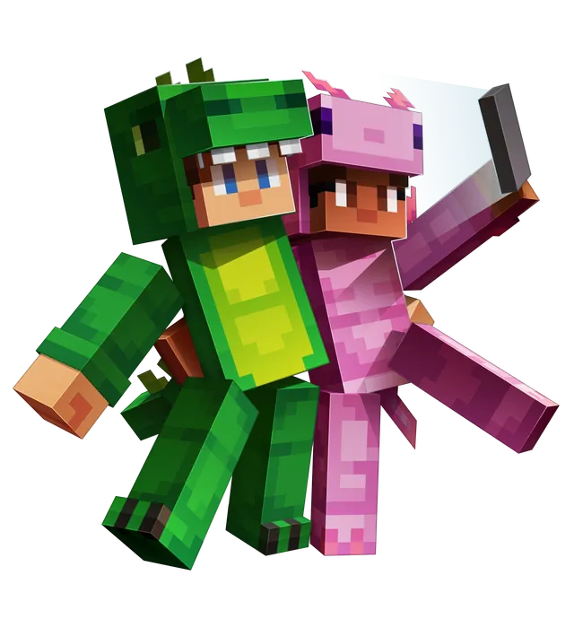
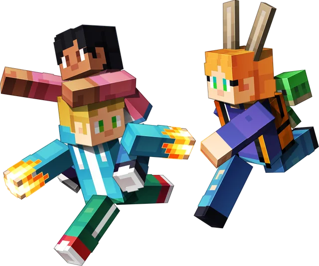

Make it yours
Your look. Your worlds.
Build a launcher library around the way you play, from clean vanilla worlds to fully customized adventures.
The Minecraft launcher, rebuilt around your worlds.
Create clean instances, install the content you actually want, and launch without babysitting Java, files, or updates.
The busy work stays in the background. Your worlds, friends, content, and identity stay front and center.
Build a launcher library around the way you play, from clean vanilla worlds to fully customized adventures.
Keep versions, loaders, mods, and dependencies aligned so getting into the same world takes fewer steps.

Native matches Java, verifies downloads, resumes interrupted files, and keeps each setup safely separated.
Vanilla, Fabric, Quilt, Forge, and NeoForge live side by side, ready for solo worlds, servers, and the next big pack.
Choose your build
Every build ships the same launcher experience. Choose the package that fits your machine.
Windows 10 or 11. The NSIS installer supports small block-level updates between releases.
Download Setup · x64Run the portable AppImage or install the Debian package. AppImage builds update themselves atomically.
Download AppImage · x64Native packages for Apple Silicon and Intel Macs running macOS 13 or later.
Download DMG · Apple SiliconDownload the package for your platform above. Windows uses a Setup executable, Linux offers an AppImage and Debian package, and macOS uses a DMG. Native downloads a matching Java runtime only when a Minecraft version needs one.
Yes. Native is released under the MIT License. You can inspect the source, build it yourself, or contribute on GitHub. Minecraft itself is not included and remains subject to Mojang and Microsoft’s terms.
A Microsoft account that owns Minecraft: Java Edition is required for normal online play. Native also supports explicit offline profiles for singleplayer and LAN use.
Native installs Vanilla, Fabric, Quilt, Forge, and NeoForge instances. Its discovery view searches both Modrinth and CurseForge for mods, modpacks, resource packs, and shaders.
Native checks GitHub Releases on startup and every four hours when automatic checks are enabled. It prefers a small differential patch. If a safe patch cannot be created, Native stops instead of silently downloading a full installer and links you to the release.
Downloads are resumable and checksum-verified. Connection and stall watchdogs restart dead transfers from their partial file, while permanent errors such as a missing file or full disk fail quickly with a readable message.